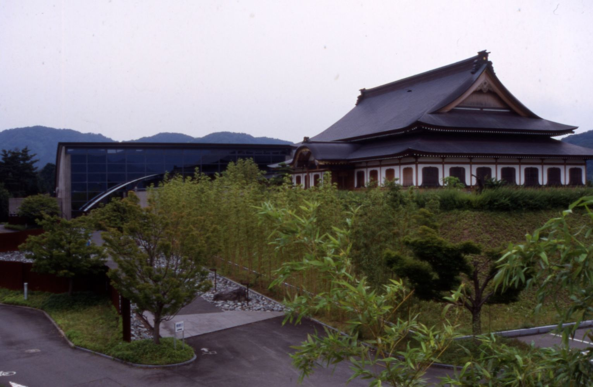
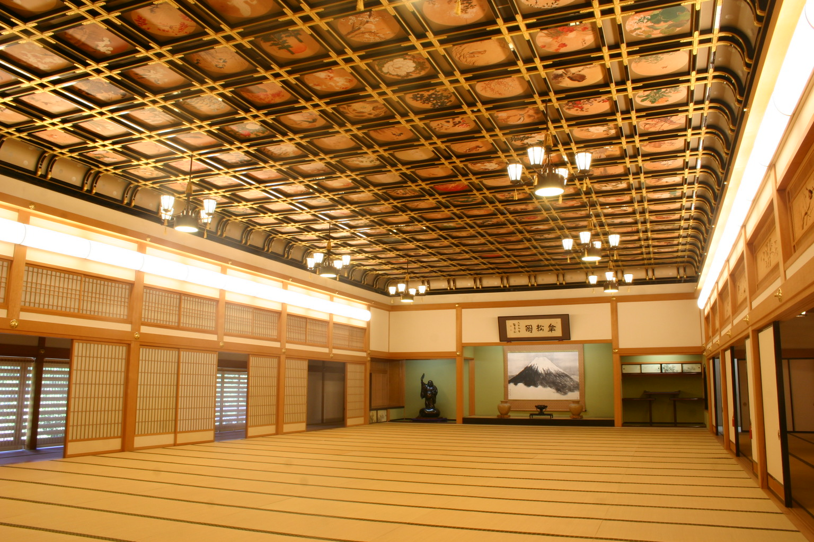

For this venture, I have the full support of Eiheiji town, where I have been officially appointed as the Evolution Ambassador (
Eiheiji.AmilKhanzada.com) and will be working out of the Eiheiji Town Four Seasons Cultural Center (
永平寺町役場 永平寺緑の村四季の森文化館). The first floor is an office space and the second floor has a replica of the Sanshokaku room in the Eiheiji temple!

